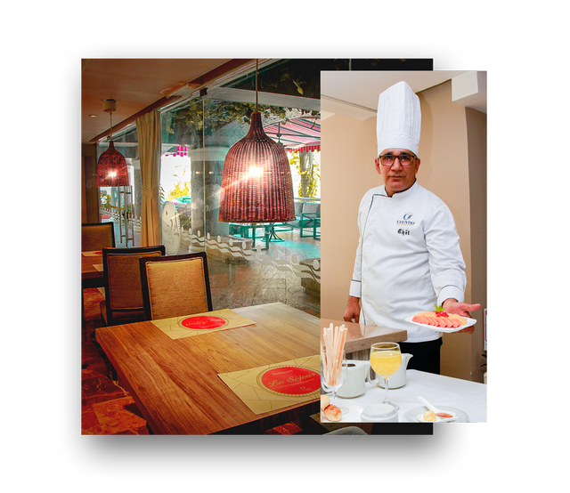
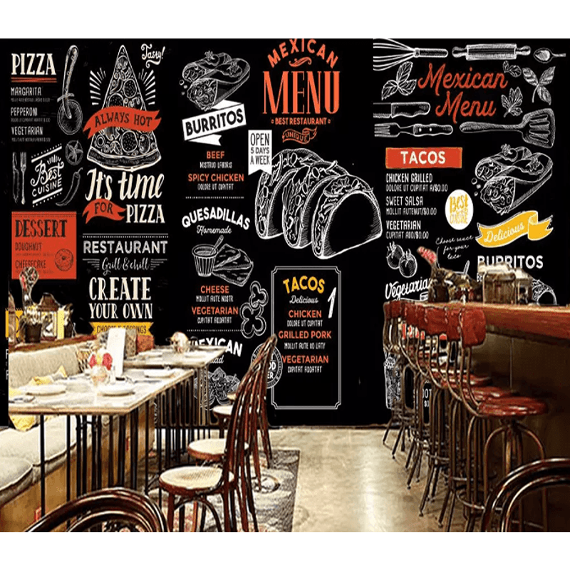

Bienvenido
Visítanos
Los tacos son un tipo de comida mexicana la cual se elabora a partir de tortillas de maíz las cuales se rellenan de carne (puede ser de pollo, res, cerdo, pescado, etc.) acompañada en algunos casos de verduras y salsas. La receta de tacos mexicanos más común es la mezcla de carne de res con verduras como tomate, cebolla, pimiento, chiles, entre otros.
Nuestras Parrillas
Visítanos
En TAQUITOS pensando en la comodidad y la seguridad de todos nuestros consumidores y amantes de los tacos en general, presenta su propia línea de productos para preparar en casa, DESCUBRE EL TAQUERO QUE HAY EN TI y sigue disfrutando de el AMOR POR LOS TACOS.
El Menú
Especialidad.
La receta de carne al pastor puede variar según la región o cocinero que la prepare, ya que, muchos hacen una adaptación de esta, pero lo que no cambia, es la carne que se utiliza.
Cuando hablamos de carnitas muchos pueden pensar que es la mezcla de diferentes carnes, pero, en realidad las carnitas tradicionales se preparan solamente con cerdo, específicamente con todas las partes del animal, eso incluye la grasa y vísceras.
La longaniza que se utiliza en la preparación de los tacos, es un embutido hecho a base de carne de cerdo o res picada, dependiendo de la región puede llevar especias o diferentes chiles que aportan toques únicos al sabor de la longaniza.
Los tacos de carne asada se preparan con ternera, preferiblemente con cortes que sean jugosos y suaves. Después esta carne es marinada con especias, ajos y chiles antes de ser cocinada en la parrilla.
Los tacos de birria se hacen básicamente con carne de chivo adobado y cocida bajo tierra, en estufa o a la parrilla, a continuación, se pica en piezas muy pequeñas para ser relleno del taco.
El taco de cabeza es un combinado de todo lo que se encuentra en la cabeza de res, borrego o cerdo, ojos, cachetes, sesos y hasta lengua. Para hacerlo, se utiliza la cabeza del animal limpia y cocida al vapor por varias horas. Se acompaña con cebolla, cilantro fresco y salsa para tacos.
Los tacos de pollo se hacen con pechuga, muslos o contramuslo preparado con especias y una vez cocido se desmenuza. Aunque puede parecer un taco simple, el pollo que se utiliza para el relleno está cargado de mucho sabor, además, se acompaña con mole y cebolla para realzarlo.
solo hace falta buenos filetes de pescado blanco firme, puede ser tilapia, bacalao o bagre, preferiblemente que no tengan espinas. Se rellena la tortilla de maíz con el pescado y se acompaña con col verde, cilantro y aguacate.

Restaurantes
Orden y Limpieza
Fuimos 6 amigos de viaje a Medellín . La comida es excelente, pero todo se opacó cuando pedimos la cuenta. El mesero y el manager del restaurante nos comentó que solo podíamos dividir la cuenta entre 3 personas.